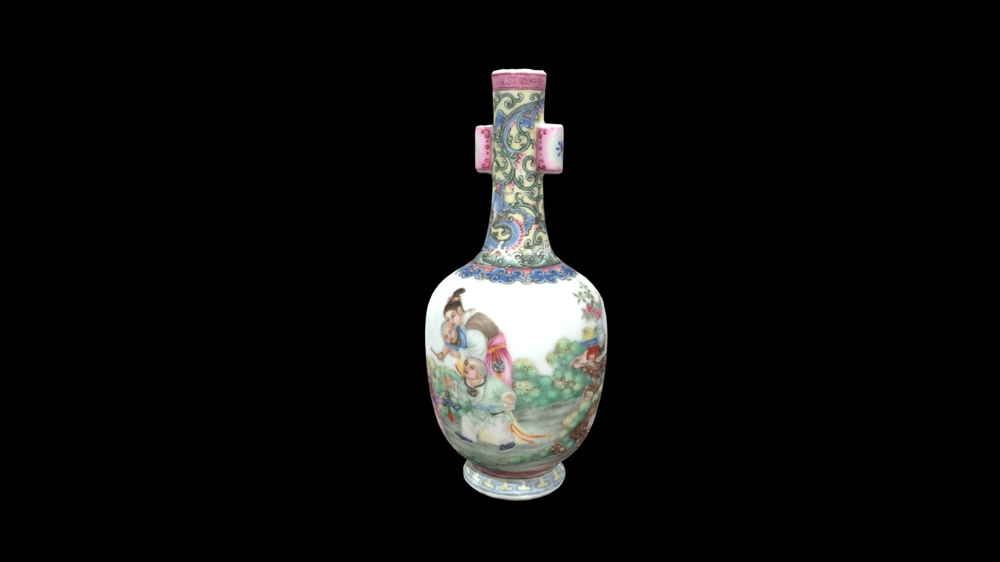
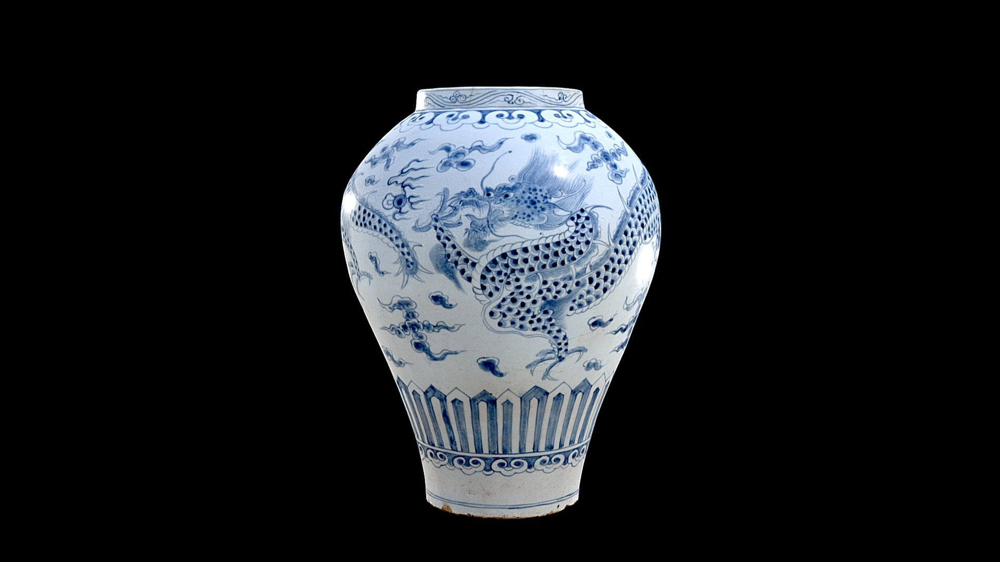

旋转查看 3D ↗
拖动旋转，滚动缩放 · 窗后城三维浏览
彩瓷花瓶
清代乾隆时期瓷器，彩色珐琅装饰与器物曲面。
正在读取社区作品…
使用与 App 共用的三维浏览器，查看以下开放授权示例。

旋转查看 3D ↗拖动旋转，滚动缩放 · 窗后城三维浏览
清代乾隆时期瓷器，彩色珐琅装饰与器物曲面。

旋转查看 3D ↗拖动旋转，滚动缩放 · 窗后城三维浏览
十八世纪朝鲜王朝瓷器，蓝色龙纹环绕白色釉面。
拖动旋转，滚动缩放 · 窗后城三维浏览
十一世纪南印度青铜雕塑，火焰环与多臂造型细节。
开放授权示例素材，用于展示三维作品浏览体验。
产品咨询、使用反馈：kaidong@kongye.space
协议为开发版本草稿，尚未正式生效。北京空也科技有限公司
Beijing Kongye Technology Co., Ltd
空也科技是一家位于中国北京的科技公司，当前以「窗后城」iOS 应用研发为主要产品工作，关注移动设备、空间记录与三维内容之间的连接。
我们希望让数字空间的记录与体验逐渐融入日常，从熟悉的场景出发，寻找更自然的内容表达方式。本网站是公司的官方信息与联系渠道。